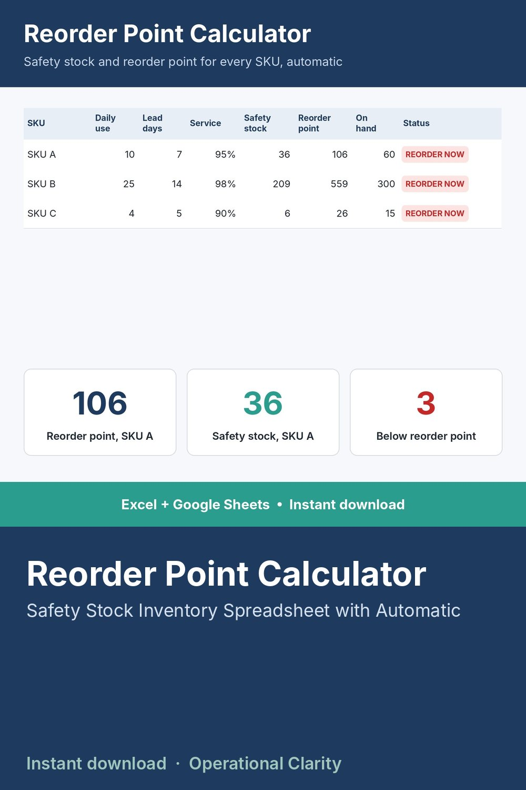

Reorder Point Calculator

STOP GUESSING WHEN TO REORDER.
This calculator uses the real industry-standard combined-variability safety stock formula - the same method used in professional inventory planning - not just a flat multiplier. It accounts for BOTH how much your demand swings day to day AND how unreliable your vendor's lead time is, so your safety stock number actually reflects your real risk.
WHAT IT DOES
- Enter your average daily usage, usage variability, average lead time, and lead time variability
- Choose your desired service level (90%, 95%, 99% - whatever fits each item's importance)
- The sheet automatically calculates: Safety Stock, Reorder Point, and Days of Safety Stock Coverage
- Dashboard flags every item currently below its reorder point
WHAT'S INCLUDED
- Excel file (.xlsx) - works in Excel 2010 and newer, no macros, no add-ins needed
- Start Here tab with plain-English setup instructions
- Sample data included so you can see it working before you enter your own numbers
WHO THIS IS FOR
Small business owners, inventory planners, and purchasing managers who are tired of stockouts or tired of tying up cash in excess inventory, and want a real statistical answer instead of a guess.
INSTANT DOWNLOAD - no physical item will be shipped. Because this is a digital product, all sales are final.